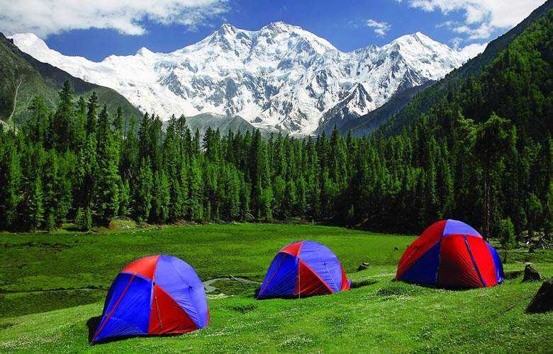

Wildcamperen
Gepubliceert op 17 Januari door Malina
Kari går i butikken Kari er ferdig på jobb og hun skal i butikken for å handle middag. Til middag skal Kari ha lettsaltet torsk med kokte poteter, gulrøtter og blomkål. Kari er veldig glad i torsk. Hun spiser fisk minst tre ganger i uka. Kari henter en handlekurv og går først til fiskedisken for å be om en torsk. Deretter går Kari og henter poteter, blomkål og gulrøtter. Hun går til kassen for å betale. Hun ber om en pose og pakker tingene.
Geir gjør lekser Geir har masse lekser. Han må bli ferdig med leksene i naturfag, matte og norsk. Geir tar fram naturfagsboka og kladdeboka opp fra skolesekken. I naturfag holder klassen til Geir på organiske forbindelser. Geir går i 9.(niende) klasse på ungdomskolen. Han har fulgt gått med i timene så han gjør alle oppgavene raskt og enkelt. Etter Geir er ferdig med alle leksene, ringer han Ola og spør han om de skal spille fotball.
Volgend bericht →
BackpackingLaatste berichten
Dieren in het nieuws